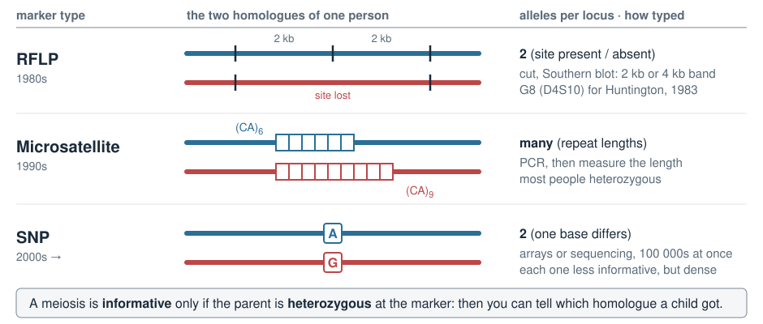
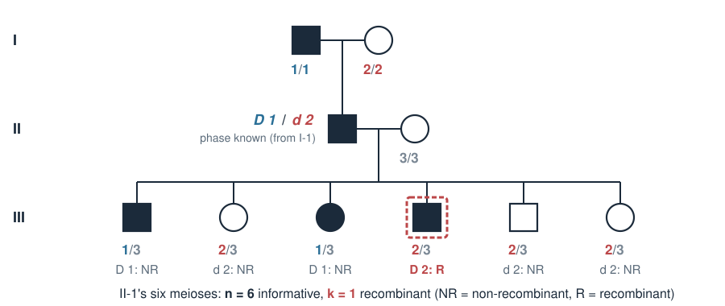
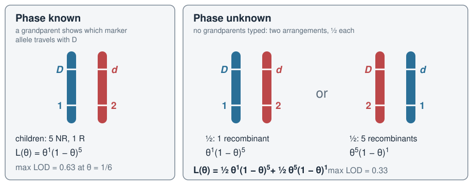
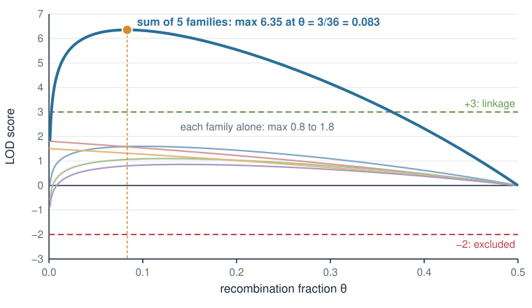
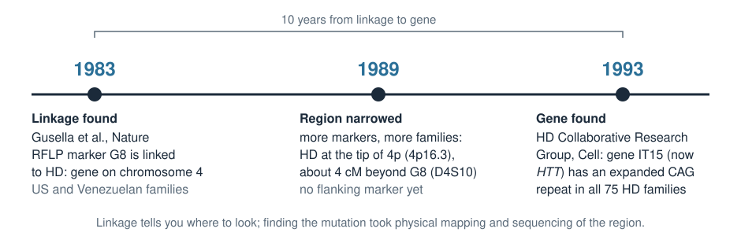

Part 2: Chromosomes and mapping. Mapping genes in families we cannot breed: the likelihood and the LOD score
Basic and molecular genetics (5MO104)
About this lecture
In flies we map genes with designed testcrosses and thousands of offspring. In humans we have neither: we get the families that exist, with a handful of children each. So we need statistics to say whether a disease gene is linked to a marker, and how far apart they are.
Why human linkage needs a different approach, and what a DNA marker is.
Counting recombinants in a pedigree: informative meioses and phase.
The likelihood L(θ) of the data, and the LOD score: \text{LOD}(\theta) = \log_{10} \dfrac{L(\theta)}{L(0.5)}.
The LOD curve, its maximum θ̂, the threshold of 3 for linkage and −2 for exclusion.
Adding LODs across families.
The story of Huntington disease: from a linked marker in 1983 to the gene in 1993.
Book: Hartwell, Genetics: From Genes to Genomes, linkage and mapping chapter (the section on mapping in humans).
Why humans need statistics
In Drosophila (Linkage & recombination)
In humans
We choose the cross: a testcross with a known double heterozygote
We take the families that exist
Hundreds or thousands of offspring
2–5 children per family
Phase known: we built the parent’s chromosomes
Phase often unknown: which marker allele is with the disease allele?
Mutant markers chosen to be visible
Markers must be DNA variants that differ between the parent’s two homologues
RF = recombinants / total; test with χ²
Combine many small families, each too small for χ²
So for humans we ask a different question: how much more probable are these families if the disease gene and the marker are linked at distance θ than if they are unlinked?
Markers: something we can follow

A marker is a DNA site where people differ. It need not do anything; we only need to tell the two homologues of a parent apart, so that we can see which one each child got.
Counting recombinants in a family

Autosomal dominant disease (D), marker with alleles 1, 2, 3. II-1’s mother is 3/3, so each child’s paternal marker allele can be read: 1 or 2. Children who got D with 1, or d with 2, are non-recombinant; III-4 got D with 2: recombinant.
Phase: known or unknown

Without the grandparents we do not know which marker allele travels with D. Each phase has prior probability ½; under the other phase, the same children count as 5 recombinants instead of 1. The likelihood averages over both phases, and the evidence is weaker.
The likelihood of the data
Each informative meiosis is recombinant with probability θ and non-recombinant with probability 1 − θ, independently. A family with n informative meioses and k recombinants (phase known) has probability
L(\theta) = \theta^{k}\,(1-\theta)^{n-k}.
This is the binomial from Probability & the χ² test, without the binomial coefficient (it is the same for every θ, so it cancels below).
θ
0.01
0.1
1/6
0.3
0.5
L(θ) for n = 6, k = 1
0.0095
0.059
0.067
0.050
0.0156
Read as a function of θ with the data fixed, L(θ) is the likelihood. The θ with the highest likelihood, θ̂ = k/n, is the best estimate.
The LOD score: linked vs unlinked
Compare “linked at θ” with “unlinked” (θ = 0.5) by the ratio of likelihoods, on a log10 scale:
One family, n = 10 meioses. Compute LOD(θ) for every θ from 0 to 0.5: the curve peaks at θ̂ = k/n, and its height is the strength of the evidence. With k = 0, LOD(0) = 10 × log10 2 = 3.01. With k > 0, LOD(0) = −∞: one recombinant rules out θ = 0.
Why 3? And why −2?
LOD ≥ 3: accept linkage. The data are 1000 times more likely under linkage at θ̂ than under no linkage.
LOD ≤ −2: reject linkage at that θ (exclusion). The data are 100 times more likely under no linkage.
In between: inconclusive, collect more families.
Why so strict? Before you look, linkage is unlikely: a randomly chosen marker has only about a 1 in 50 chance of lying close enough to a given gene to show linkage. Odds of 1000 : 1 from the data, against a prior of about 1 : 49, give roughly 20 : 1 in favour, so about a 5 % chance that a “significant” linkage is false. That matches the familiar 5 % level.
Threshold from Morton (1955), Am J Hum Genet (PMID 13258560), who introduced the LOD score for human linkage.
Adding families

Families are independent, so their likelihoods multiply and their LODs add: \text{LOD}_\text{total}(\theta) = \sum_\text{families} \text{LOD}_i(\theta). Five families (invented data), none above 1.8 alone, sum to 6.35 at θ̂ = 3/36 = 0.083.
Try it: the LOD curve
Exclusion: a real example
DRPLA (dentatorubral–pallidoluysian atrophy) is an autosomal dominant neurodegenerative disease that looks much like Huntington disease. Is it caused by the same gene?
Kondo et al. (1990, J Med Genet, PMID 1969487) typed four DRPLA families for the HD-linked marker D4S10 (probe G8):
The LOD score was negative at all θ, and −2.215 at θ = 0.15.
So the DRPLA gene is not within about 15 cM of D4S10: it is not the HD gene, and DRPLA is a distinct disease.
Negative evidence is useful: exclusion rules out regions, and so narrows the search.
Not yet significant
Youngman et al. (1989, Genomics, PMID 2574148) tested a new marker, D4S90, near the tip of chromosome 4p:
In HD families: maximum LOD 2.14 at θ = 0.00.
2.14 is above 0 (favours linkage) but below 3: “provisional”, not proof.
In reference families, D4S90 mapped 6 cM from D4S10, at the far end of 4p16.3; HD itself lay about 4 cM distal to D4S10.
A LOD of 2 means odds of 100 : 1 from the data, which is still not enough given the low prior. The answer is more meioses.
Huntington disease: from linkage to gene

Gusella et al. (1983) “A polymorphic DNA marker genetically linked to Huntington’s disease”, Nature 306:234–238 (PMID 6316146). The 1993 gene: Huntington’s Disease Collaborative Research Group, Cell 72:971–983 (PMID 8458085).
The Venezuelan families
Some of the key HD families live in Venezuela: very large extended kindreds with many affected people, studied by Nancy Wexler and a US–Venezuelan collaboration.
By 2004 the Venezuelan kindreds comprised 18 149 individuals over 10 generations (Wexler et al. 2004, PNAS, PMID 14993615).
A large pedigree with many affected people and known phase gives many informative meioses: exactly what a LOD score needs.
Such pedigrees made linkage possible, and later also the study of what modifies age of onset.
Mapping in humans depends on families who agree to take part. That raises ethical questions about consent, about learning one’s own risk, and about benefit to the families, which come back in the Ethics module.
What linkage can and cannot do
Linkage analysis is good for
It struggles with
Monogenic diseases with clear inheritance (HD, cystic fibrosis, DMD)
Traits influenced by many genes, each with a small effect
Large families with many affected members
Small families, uncertain diagnosis
Finding the region, often a few cM (millions of bases)
Pinpointing the variant: needs fine mapping and sequencing
Few markers needed (one every ~10 cM)
Incomplete penetrance and phenocopies blur recombinant counts
Cystic fibrosis (CFTR, 1989) and many other disease genes were found this way: linkage first, then the gene. For common diseases, the field moved to association studies (GWAS), which use unrelated people instead of families.
Summary
Concept
Key fact
Marker
a DNA variant (RFLP, microsatellite, SNP) used to tell a parent’s homologues apart
Informative meiosis
the parent is heterozygous at the marker and at the disease locus, so the child can be scored R or NR
Phase
which marker allele is on the same homologue as the disease allele; known from grandparents, else average over both (½ each)
Likelihood (phase known)
L(θ) = θk (1 − θ)n−k; maximal at θ̂ = k/n
LOD score
LOD(θ) = log10[L(θ) / L(0.5)]; LOD(0.5) = 0
Thresholds
≥ 3 linkage (odds 1000 : 1); ≤ −2 excluded at that θ
Many families
LODs add at each θ; then find the maximum of the sum
k = 0
LOD(0) = n × 0.301: at least 10 non-recombinant meioses for LOD 3
Huntington
linked to G8 on chromosome 4 in 1983; gene (HTT, CAG repeat) in 1993
Where this leads
Part 2 complete. From chromosomes (Chromosome theory & sex linkage) through recombination frequencies and maps (Linkage & recombination, Three-point crosses) to human families (today): the same θ throughout.
Genomic variation (Part 4). SNPs and haplotypes: the markers behind modern mapping, and how to find their frequencies in gnomAD.
Complex traits (Part 7). When many genes matter, families are replaced by GWAS in unrelated people, and the LOD threshold of 3 is replaced by a genome-wide p-value threshold.
Ethics. Predictive testing for Huntington disease began with the linked marker.